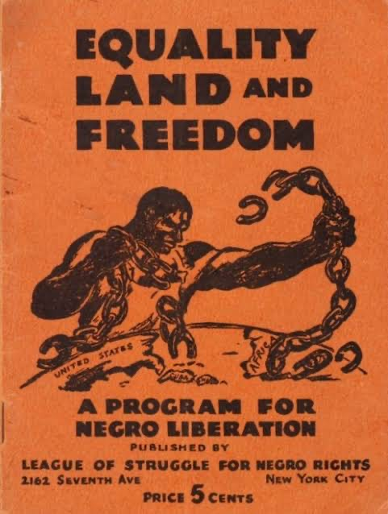

The Civil Rights Movement from the 1930s to the 1960s
about the KKK efh3eiufhwieufhwiuehf
iuwehfiuehfiwehfiuwehfi wuhefiuwhefieuewkfhwifh
cbqw8fyewiufheiufhwiue fhewiufhwifhwieufhweiufhwi
efhwiefhiufhweifhiefhwifh iufwifhweifweiufwief

The Great Depression of the 1930s worsened the already bleak economic situation of African Americans. They were the first to be laid off from their jobs, and they suffered from an unemployment rate two to three times that of whites. In early public assistance programs African Americans often received substantially less aid than whites, and some charitable organisations even excluded Blacks from their soup kitchens.